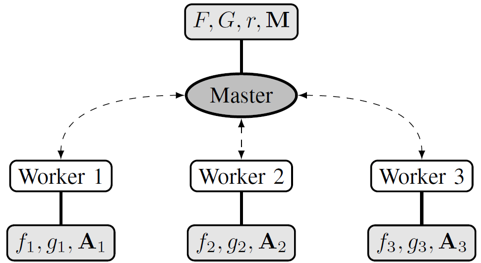
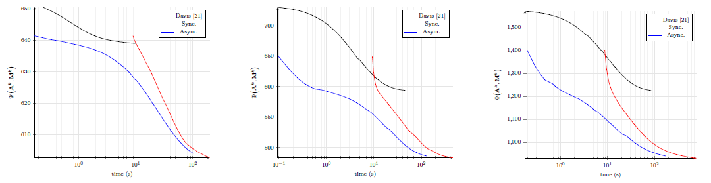

Partially asynchronous distributed unmixing of hyperspectral images
So far, the problem of unmixing large or multitemporal hyperspectral dataset has been specifically addressed in the remote sensing literature only by a few dedicated strategies. Among them, some attempts have been made within a distributed estimation framework, in particular relying on the alternating direction method of multipliers (ADMM). In this paper, we propose to study the interest of a partially asynchronous distributed unmixing procedure based on a recently proposed asynchronous algorithm. The distribution architecture is depicted in Fig. 2.

Fig. 1. Illustration of the master-slave architecture considered for the unmixing problem with 3 workers (the function and variables available at each node are given in light gray rectangles).
Under relatively standard conditions, the proposed approach inherits from the convergence guarantees previously studied in the literature, and from those of the traditional PALM algorithm for its synchronous counterpart. Evaluated on synthetic and real data, the proposed approach provides competitive estimation results, while significantly reducing the computation time to reach convergence. More precisely, comparisons with a distributed synchronous counterpart of the proposed unmixing procedure allow its interest to be assessed on synthetic and real data (see Fig. 2). Besides, thanks to its genericity and flexibility, the procedure investigated in this work can be implemented to address various matrix factorization problems.

Fig. 2. Evolution of the objective function for the synthetic datasets, obtained for the proposed algorithm and its synchronous version until convergence.
{kind=link}
The associated unmixing algorithm is described in the submitted paper:
- article
 .
.
The Julia implementation of the proposed asynchronous distributed algorithm is available below:
- Julia codes
 [ .zip - 147.4Mo ].
[ .zip - 147.4Mo ].